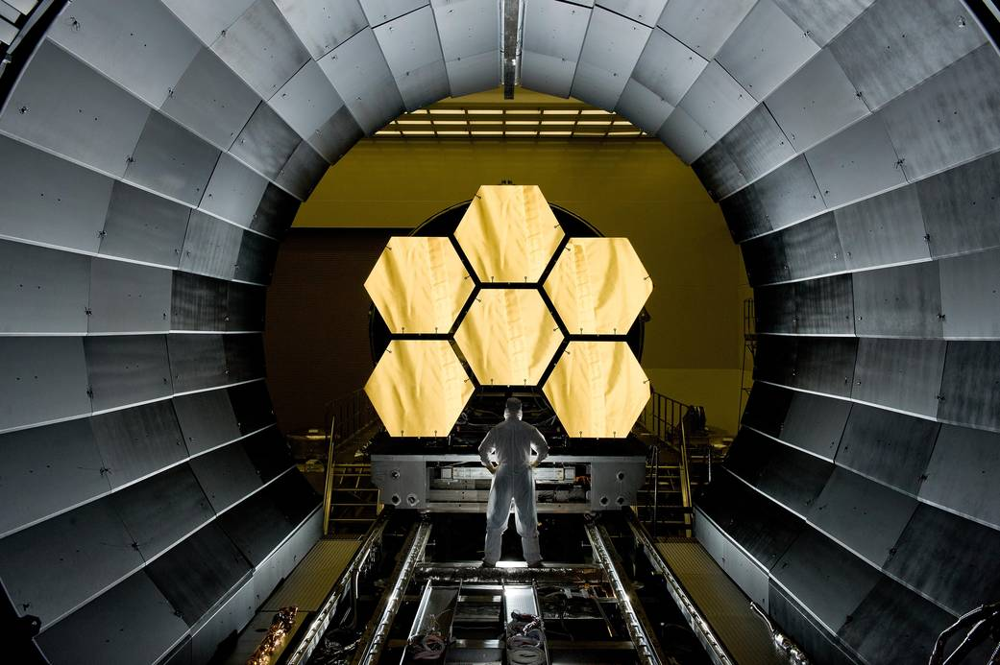
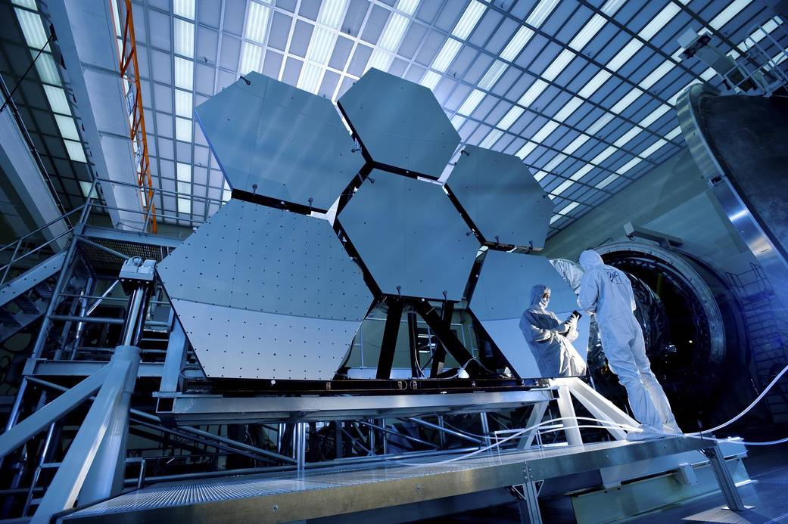
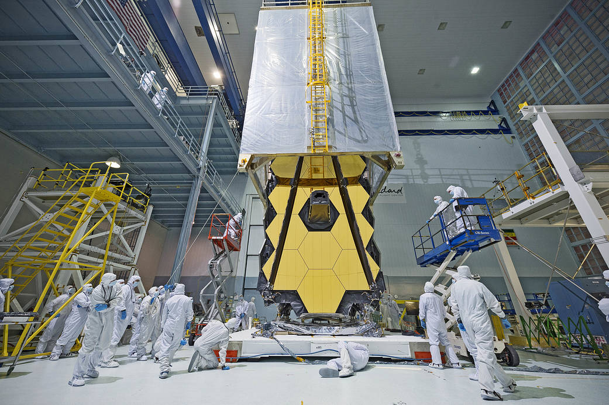
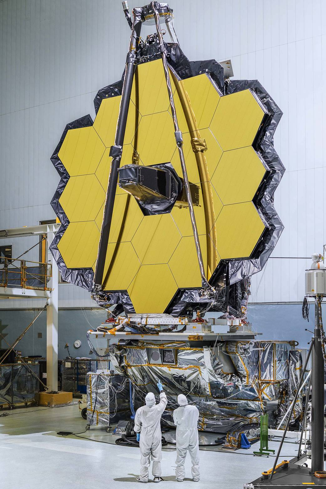

Next Generation Space Telescope
NASA engineer Ernie Wright looks on as the first six flight ready James Webb Space Telescope's primary mirror segments are prepped to begin final cryogenic testing at NASA's Marshall Space Flight Center. This represents the first six of 18 segments that will form NASA's James Webb Space Telescope's primary mirror for space observations.

Into the Looking Glass For Webb Telescope Tests
Recently, technicians at NASA's Marshall Space Flight Center in Huntsville, Ala., completed a series of cryogenic tests on six James Webb Space Telescope beryllium mirror segments at the center's X-ray & Cryogenic Facility. During testing, the mirrors were subjected to extreme temperatures dipping to -415 degrees Fahrenheit,.

NASA's Webb Telescope Clean Room 'Transporter'
What looks like a teleporter from science fiction being draped over NASA's James Webb Space Telescope, is actually a "clean tent." The clean tent protects Webb from dust and dirt when engineers at NASA's Goddard Space Flight Center

James Webb Space Telescope Mirrors Will Piece Together Cosmic Puzzles
The primary mirror of NASA's James Webb Space Telescope that consists of 18 hexagonal mirrors looks like a giant puzzle piece standing in the massive clean room of NASA's Goddard Space Flight Center in Greenbelt, Maryland. The telescope will help piece together puzzles scientists have been trying to solve throughout the cosmos.